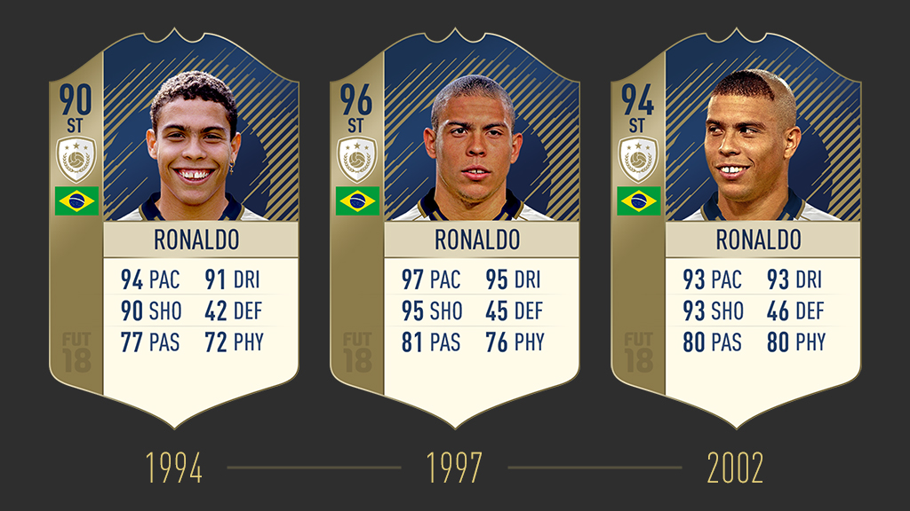
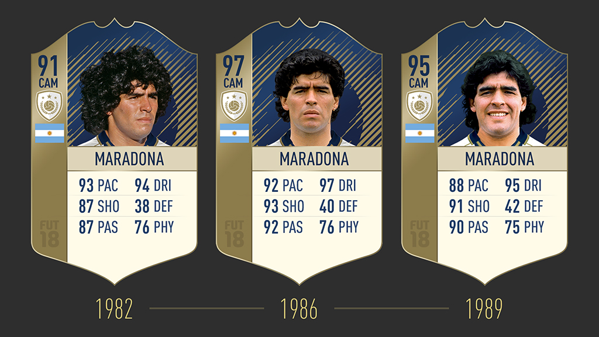
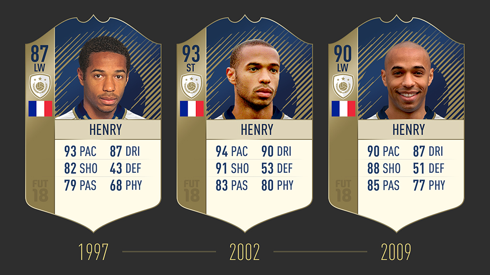
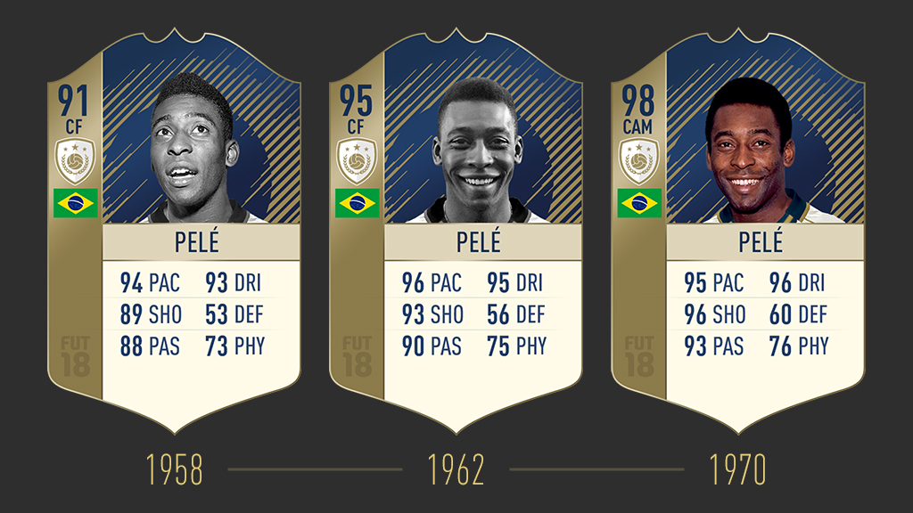

Présentation de l'entreprise :
Marre des match déloyale, marre de rencontrer des joueurs aux équipes de folie sur Fut Champion,
marre du système, marre de dépenser des somme astronomique et ne jamais rien taper dans les pack opening ??
Vous avez trouvé ce qu'il vous faut. Ici vous pouvez acheter directement le joueur qui vous convien
parmis la liste des cinq meilleurs joueur du monde de tout les temps contre de l'argent réel
Ma société vous donne l'opportunité de pouvoir rivaliser vos fut, parceque vaut joueur sont évidamment vendable.

RONALDO NAZÁRIO :
Explosif, redoutable finisseur et très technique,
ce joueur brésilien de légende était l'un des attaquants
les plus redoutés au monde. Triple Ballon d'Or, Ronaldo Nazário
a fait partie des célèbres Galactiques du Real Madrid.

DIEGO MARADONA :
Reconnu comme l'un des footballeurs les plus doués au monde,
Maradona était un dribbleur redoutable, capable de mystifier n'importe quel défenseur.
Champion du monde en 1986, il est resté célèbre pour avoir marqué
le but du siècle au terme d'un raid solitaire face à l'Angleterre.

THIERRY HENRY :
Thierry Henry, l'un des meilleurs buteurs de tous l
es temps de Premier League, était un footballeur élégant
et un redoutable finisseur. Il a été sacré 4 fois meilleur buteur
du championnat anglais en huit saisons chez les Gunners. Champion du monde en France en 1998,
il reste le meilleur buteur des Bleus avec 51 réalisations en 123 sélections.

PELÉ :
Seul joueur à avoir marqué plus de buts pour le Brésil que Ronaldo Nazário,
Pelé est peut-être le plus grand footballeur de tous les temps.
Six fois champion du Brésil, trois fois champion du monde,
il a marqué plus de 600 buts en matchs officiels en 21 ans de carrière.
Pas étonnant qu'il soit considéré comme l'une des plus grandes légendes du ballon rond.
RUUD GULLIT :
Joueur complet, polyvalent et dynamique,
Ruud Gullit était capable de briller
à n'importe quel poste offensif. Joueur clé du légendaire
AC Milan et de la sélection des Pays-Bas et doté d'incroyables qualités,
Gullit reste un joueur très populaire auprès des supporters.